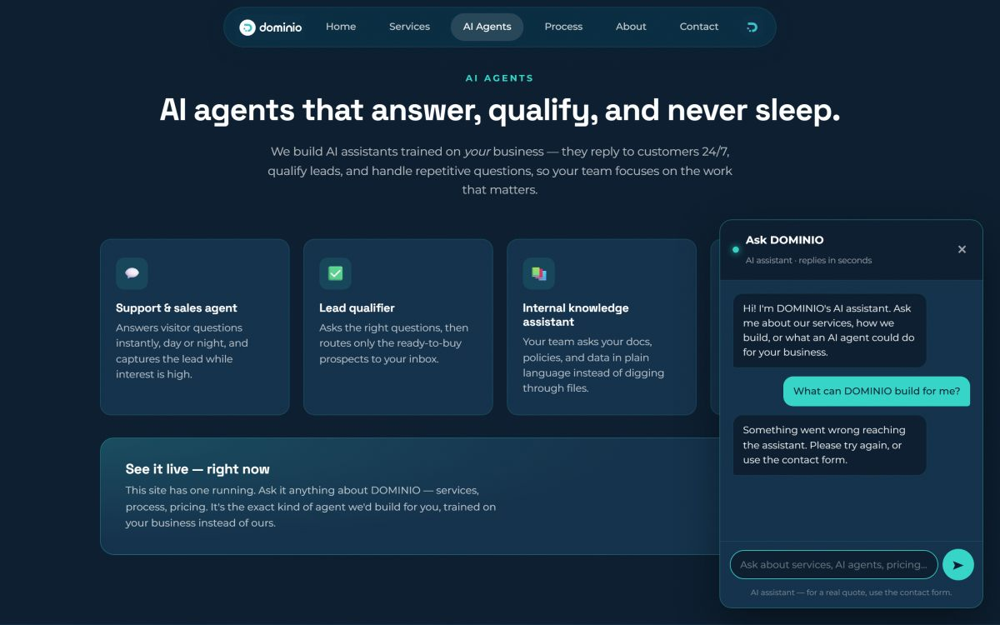
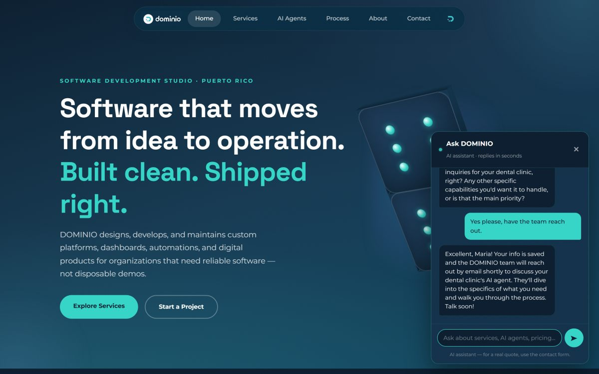
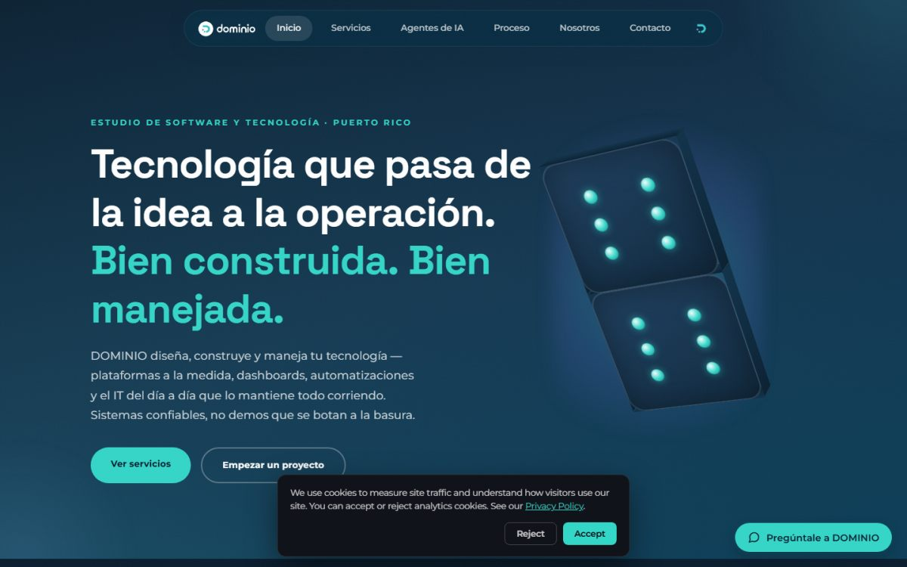
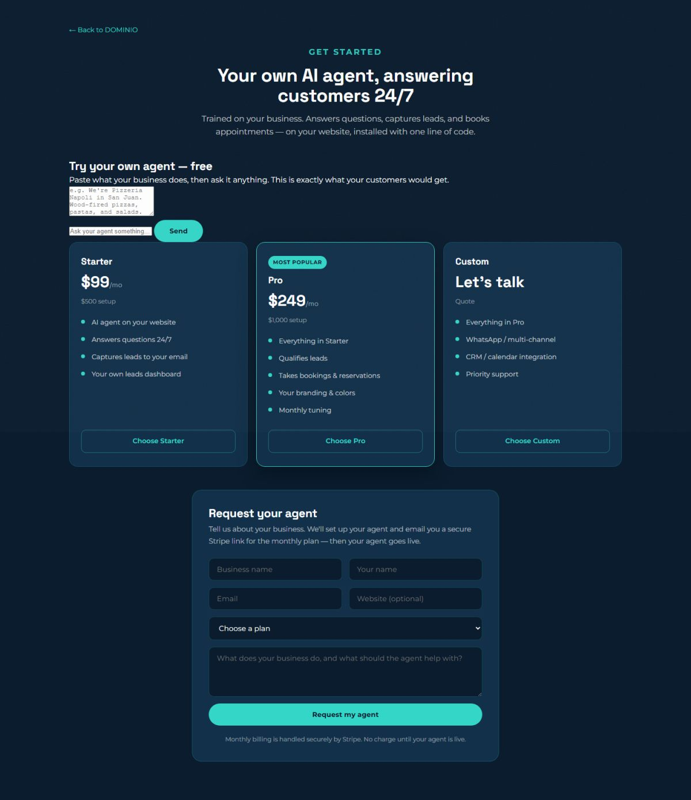
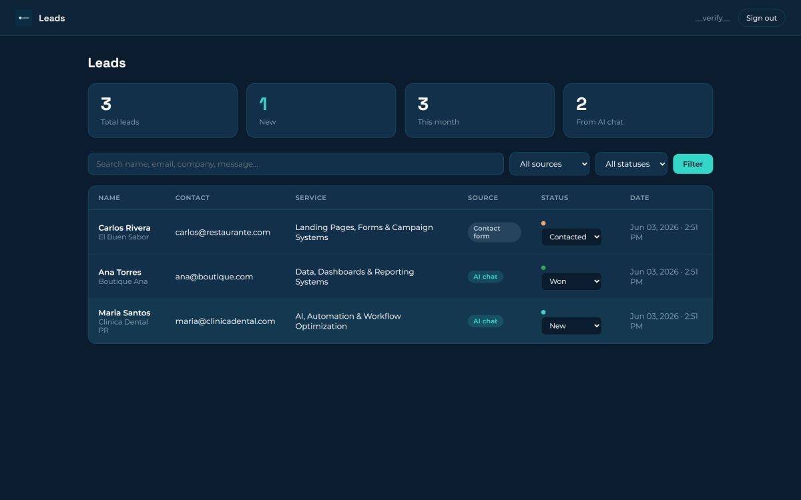
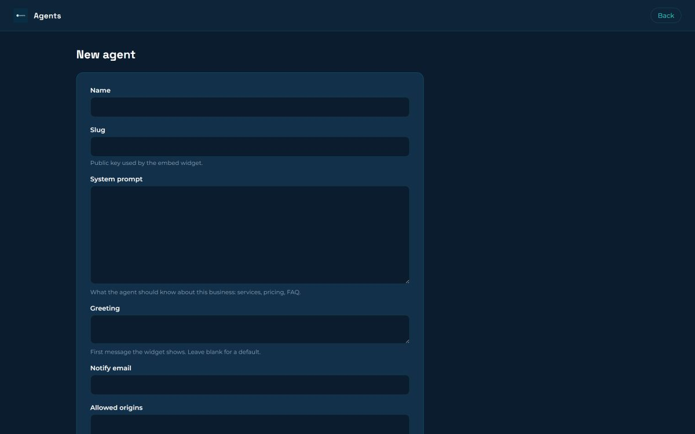
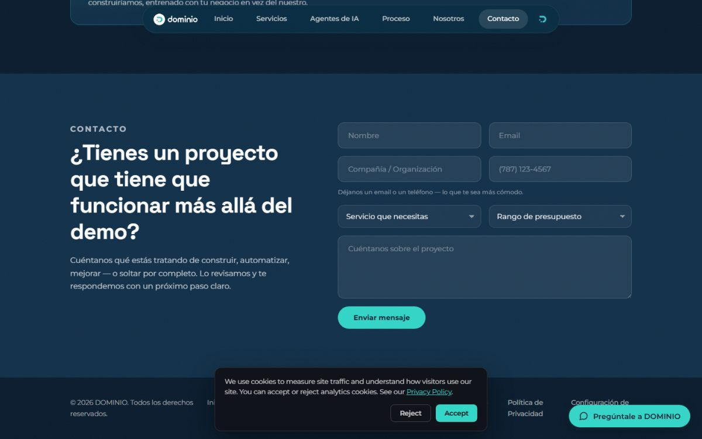
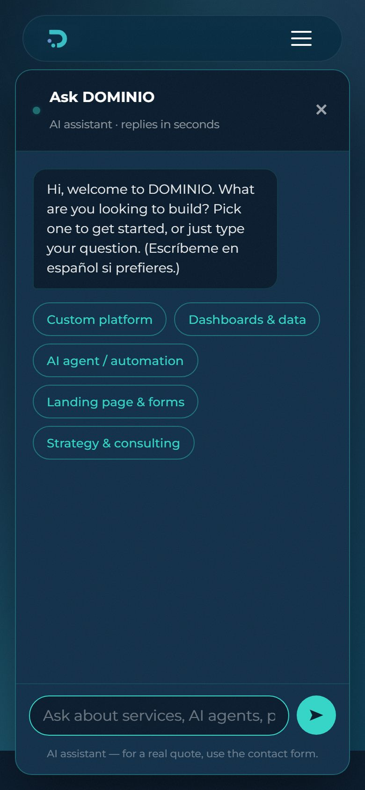

| Versión | Fecha | Autor | Descripción del cambio |
|---|---|---|---|
| 1.0 | 22 de julio de 2026 | Leomar Rodríguez González | Especificación y diseño del sistema en producción (ingeniería inversa documentada). |
| 1.0 (spec) | 23 de julio de 2026 | Leomar Rodríguez González | DOMINIO Chat 24/7 — Especificación oficial del producto (documento independiente). |
| 2.0 | 24 de julio de 2026 | Leomar Rodríguez González | Reescritura unificada: fusiona la especificación oficial del producto con el diseño y estado real del sistema en un solo documento. |
Responsabilidad profesional: el análisis, diseño, desarrollo, integración, pruebas, despliegue y mantenimiento de DOMINIO Chat 24/7 están a cargo de Leomar Rodríguez González como único desarrollador responsable bajo la marca DOMINIO, con herramientas de IA como apoyo bajo su dirección y revisión. Los servicios especializados de terceros (nube, modelos de IA, correo) se identifican como dependencias o proveedores.
DOMINIO Chat 24/7 es una plataforma de atención automatizada para páginas web: responde consultas de visitantes en cualquier momento con información aprobada por cada organización, orienta a clientes potenciales, captura datos de contacto, identifica oportunidades comerciales, agenda citas y transfiere el seguimiento a una persona cuando la consulta lo requiere. La plataforma es multi-tenant: sirve a múltiples clientes de DOMINIO manteniendo aislamiento total de datos y configuración por organización, y centraliza en un panel por cliente las conversaciones, los prospectos y las métricas.
A diferencia de una especificación puramente prospectiva, este documento parte de una realidad: el núcleo del sistema está construido y en producción en dominiopr.com — widget de conversación con IA (Claude, de Anthropic), captura de leads validada en servidor, reservas con protección anti doble-reserva, plataforma multi-tenant con widget embebible de una línea, panel de administración de agentes y dashboard de leads por cliente. Sobre esa base, el producto completo añade la capa de plataforma centralizada: historial y bandeja de conversaciones, base de conocimiento gestionada, roles y auditoría, analítica y cobro por suscripción (especificados en Phase 2).
Resultado esperado: convertir la página web de cada cliente en un canal de atención activo 24/7, sin sustituir la supervisión humana ni comprometer la exactitud, la privacidad o el control del cliente.
Para organizaciones que reciben consultas frecuentes mediante su página web y pierden oportunidades fuera del horario laboral, DOMINIO Chat 24/7 ofrece un asistente conversacional configurable que responde con información autorizada, guía al visitante y crea oportunidades de seguimiento. A diferencia de un formulario estático o un chatbot limitado a opciones rígidas, combina conversación natural con IA, control de fuentes, reglas operativas, validación en servidor y supervisión humana.
| Principio | Aplicación |
|---|---|
| Exactitud antes que fluidez | La respuesta debe estar respaldada por el contenido del negocio o declarar su limitación; el agente tiene prohibido inventar precios, promesas o hechos. |
| El modelo propone, el backend valida | Ninguna escritura de datos (leads, citas) depende del juicio de la IA: validación en servidor y constraints de base de datos. |
| Humano disponible como alternativa | El sistema facilita seguimiento o transferencia; siempre existe un canal alterno (formulario, email). |
| Privacidad por diseño | Solo se solicitan los datos necesarios; reglas de acceso, aislamiento por organización y retención definida. |
| Control del cliente | La organización decide contenido, mensajes, reglas, apariencia, dominios y usuarios. |
| Experiencia simple | El visitante no necesita conocer la tecnología; el administrador no necesita capacitación extensa. |
| Austeridad operable | La arquitectura debe poder operarla una sola persona con costos acotados por diseño. |
| Mejora continua | Las conversaciones y métricas deben permitir detectar contenido faltante y oportunidades. |
DOMINIO (dominiopr.com) es un estudio de software y tecnología en Puerto Rico: desarrolla plataformas a la medida, dashboards, automatizaciones y herramientas de IA, y maneja la tecnología del día a día de sus clientes. Sus clientes y prospectos usan las páginas web como punto de entrada para conocer servicios y establecer contacto.
Convertir el tráfico web existente en conversaciones útiles y medibles. Un asistente bien gobernado orienta de inmediato, reduce fricción, mejora la captura de oportunidades y entrega información operativa. DOMINIO — que sufría el mismo problema en su propia página — resolvió primero su caso y convirtió la solución en un producto vendible por suscripción a PYMEs de Puerto Rico, con una brecha de mercado clara: ninguna opción existente combina IA generativa real en español puertorriqueño, captura validada, instalación de una línea y precio/manejo pensados para el mercado local (ver benchmarking, sección 7).
| ID | Objetivo | Estado |
|---|---|---|
| OBJ-01 | Ofrecer un canal de atención disponible 24/7 desde la página web. | ✔ en producción |
| OBJ-02 | Resolver automáticamente consultas frecuentes con información autorizada. | ✔ en producción |
| OBJ-03 | Capturar datos de contacto e intención cuando exista una oportunidad de seguimiento. | ✔ en producción |
| OBJ-04 | Escalar preguntas complejas o inciertas con el contexto de la conversación. | ⚠ parcial (referencia al equipo; consola → M-16) |
| OBJ-05 | Centralizar conversaciones, prospectos, fuentes y métricas por cliente. | ⚠ parcial (leads sí; conversaciones/fuentes/métricas → M-02/M-15/M-03) |
| OBJ-06 | Permitir que cada cliente controle contenido, apariencia y reglas de su chatbot. | ✔ en producción (vía servicio manejado en el Factory) |
| OBJ-07 | Proteger datos, accesos y separación entre organizaciones. | ✔ en producción (roles granulares y auditoría → M-17) |
| Indicador | Meta inicial | Método de medición |
|---|---|---|
| Disponibilidad del servicio | 99.5% mensual | Monitoreo de disponibilidad. |
| Tiempo de respuesta del chat | < 8 segundos en operación normal | Latencia de mensajes. |
| Resolución automática | ≥ 70% de consultas frecuentes | Conversaciones cerradas sin escalamiento (requiere M-02/M-16). |
| Conversaciones sin respuesta útil | < 10% | Registro de respuesta segura (requiere M-19). |
| Captura de prospectos | Mayor que el formulario web | Ya medible: source=chat vs contact_form. |
| Satisfacción (CSAT) | ≥ 4 / 5 | Encuesta post-conversación (requiere M-18). |
El proceso sin la plataforma — el que vive un negocio típico — depende del contenido estático y de canales atendidos manualmente:
flowchart LR V(["Visitante"]) --- U1(["Leer contenido
de la página"]) V --- U2(["Buscar información
de contacto"]) V --- U3(["Enviar formulario
o email"]) V --- U4(["Llamar para
coordinar cita"]) D(["Dueño del negocio"]) --- U5(["Revisar buzón
manualmente"]) D --- U6(["Responder y dar
seguimiento"]) D --- U7(["Anotar interesados
en notas sueltas"]) U3 -.-> U5 U4 -.-> U6
Información y documentos en uso: contenido de la página, descripciones de servicios, preguntas frecuentes, formularios de contacto, correos y notas de seguimiento, políticas y material institucional — los mismos insumos que alimentarán la base de conocimiento del agente.
| Herramienta | Qué ofrece | Limitación frente al problema |
|---|---|---|
| Intercom (Fin AI) | Chat de sitio con agente de IA y helpdesk completo. | Precio de nivel empresarial (suscripción + costo por resolución); inglés-primero; excesivo para una PYME de PR. |
| Drift / Salesloft | Chat conversacional de marketing B2B. | Enfocado a equipos de ventas grandes; costo alto; sin adaptación local. |
| Tidio / Tawk.to | Widgets económicos con bots de reglas y live chat. | Los bots de reglas no entienden preguntas libres; el live chat vuelve a depender de un humano conectado. |
| HubSpot Chat | Chat + CRM gratuito con bots básicos. | La IA conversacional real requiere planes pagados; configuración compleja para un dueño de negocio. |
| Chatbots de reglas (ManyChat, Landbot) | Flujos de botones predefinidos. | Abandonan al visitante cuando la pregunta se sale del guion. |
| Formulario de contacto | Universal y barato. | Es exactamente el proceso actual: pasivo, sin respuesta inmediata ni calificación del lead. |
Posición de DOMINIO Chat 24/7: IA generativa real que conversa en español puertorriqueño sobre el negocio específico + captura y citas validadas en servidor + instalación de una línea + servicio manejado y precios para el mercado local.
DOMINIO Chat 24/7 centraliza la conversación, el conocimiento y el seguimiento en una sola plataforma. Cada organización (tenant) tiene su configuración, contenido, reglas, apariencia y dominios permitidos. El visitante conversa sin crear cuenta; el personal autorizado usa un panel protegido. Tres capas de producto sobre una sola base de código Django:
| Capa | Contenido | Estado |
|---|---|---|
| Sitio comercial de DOMINIO | Landing en español de PR, seis líneas de servicio, precios con signup self-serve (4 planes + anual), formulario de contacto, demo público del agente, GA4 con consentimiento. | ✔ en producción |
| Agente conversacional | Widget con IA (Claude), quick-replies, captura de leads (capture_lead) y citas (create_booking) validadas en backend, emails de notificación con contexto y página de origen. | ✔ en producción |
| Plataforma multi-tenant | Widget embebible de una línea tematizado por cliente, Agent Factory (alta/edición/pausa), dashboard de leads por cliente con login auto-provisionado, aislamiento por organización. | ✔ en producción |
| Plataforma centralizada completa | Historial y bandeja de conversaciones con estados, base de conocimiento con fuentes, roles y auditoría, analítica, encuestas, cobro por suscripción. | ✘ planificada — Phase 2 (M-01…M-19) |
| Stakeholder | Interés | Rol en el sistema |
|---|---|---|
| Visitante / cliente potencial | Orientación rápida y confiable. | Usa el widget, pregunta, deja datos o reserva; sin cuenta. |
| Prospecto (lead) | Recibir seguimiento sobre su necesidad. | Provee contacto e intención; queda en el pipeline del cliente. |
| Dueño / representante del cliente (tenant) | Que el chatbot represente bien su negocio y produzca leads. | Aprueba contenido y reglas; atiende leads desde su dashboard. |
| Agente humano del cliente | Atender lo no resuelto automáticamente. | Recibe contexto y continúa el seguimiento (rol formal → M-17). |
| DOMINIO (operador de plataforma) | Operar, mantener y evolucionar el servicio. | Administra agentes en el Factory, seguridad, costos y soporte. |
| Proveedores (Anthropic, AWS, Google) | — | Inferencia de IA, infraestructura, correo y analítica: dependencias externas. |
| Función | Visitante | Agente* | Admin. organización* | Admin. DOMINIO |
|---|---|---|---|---|
| Conversar con el widget | Sí | Sí | Sí | Sí |
| Ver conversaciones | Solo su sesión | Asignadas o permitidas | Toda su organización | Según soporte autorizado |
| Ver y gestionar prospectos | No | Asignados | Toda su organización | Todo |
| Gestionar conocimiento/fuentes | No | No | Sí | Sí |
| Gestionar usuarios | No | No | Su organización | Sí |
| Configurar agentes/plataforma | No | No | Limitado a su organización | Sí |
| Ver auditoría | No | No | Parcial | Sí |
* Estado actual: existe el binario miembro-de-organización (ve todo lo suyo) vs. staff de DOMINIO (ve todo). La separación agente/admin-organización y la auditoría se implementan en M-17. El aislamiento entre organizaciones ya es efectivo hoy (scoping por Membership).
Modelo iterativo-incremental de corte ágil con entregas continuas a producción, ejecutado por un único desarrollador con asistencia de IA. Justificación: los requisitos evolucionan con feedback real de prospectos, cada incremento es desplegable y el costo de un ciclo en cascada no se justifica a esta escala. Los cambios que afecten alcance, arquitectura, seguridad o costos se documentan y clasifican (corrección / ajuste menor / mejora / ampliación de alcance).
| Incremento | Contenido | Estado |
|---|---|---|
| 1. Sitio comercial | Landing, formulario, emails, despliegue. | ✔ |
| 2. Agente de IA propio | Widget "Ask DOMINIO", motor con tools, límites anti-abuso. | ✔ |
| 3. Multi-tenant | Clientes, widget embebible, Factory, dashboards, onboarding, reservas. | ✔ |
| 4. Comercialización | Precios (4 planes + anual), funnel de signup, kit de marketing. | ✔ |
| 5. Formalización | Especificación unificada (este documento) + plan de mejoras (Phase 2). | ✔ esta entrega |
| 6. Plataforma completa | Iteraciones 1–5 del roadmap de Phase 2 (pruebas, cobro, historial, analítica, citas, conocimiento, consola, roles). | ✘ próxima |
Catálogo unificado. Prioridad MoSCoW; el estado refleja el sistema real y, cuando aplica, la mejora de Phase 2 que completa el requisito.
| ID | Requisito | Prior. | Estado |
|---|---|---|---|
| RF-01 | Inicio de conversación sin crear cuenta. | Must | ✔ |
| RF-02 | Saludo configurable por organización (autogenerable por IA); variación por página/horario. | Should | ⚠ saludo por tenant ✔; por página/horario ✘ |
| RF-03 | Mensajería de texto conservando el orden de la conversación. | Must | ✔ |
| RF-04 | Respuesta basada exclusivamente en conocimiento autorizado del negocio. | Must | ⚠ vía texto compilado; fuentes gestionadas → M-15 |
| RF-05 | Control de incertidumbre: declarar limitación y ofrecer alternativa en vez de inventar. | Must | ⚠ reglas activas; medición formal → M-19 |
| RF-06 | Acciones rápidas (quick-replies) por servicios y temas. | Should | ✔ |
| RF-07 | Captura de prospectos: nombre, correo, teléfono, empresa, interés; consentimiento. | Must | ✔ (aviso de consentimiento explícito → M-10) |
| RF-08 | Validación de formatos antes de guardar (email real, teléfono de 10 dígitos). | Must | ✔ en backend |
| RF-09 | Agendamiento de citas con fecha/hora validadas y anti doble-reserva. | Must | ✔ (constraint único parcial en BD) |
| RF-10 | Escalamiento por solicitud, regla, tema sensible o baja confianza. | Must | ✘ → M-16 |
| RF-11 | Transferencia de contexto al humano: historial, resumen, datos y motivo. | Must | ✘ → M-16 |
| RF-12 | Atención humana: continuar la conversación o registrar seguimiento; cierre clasificando resultado. | Should | ✘ → M-16 |
| RF-13 | Encuesta de satisfacción opcional al finalizar. | Could | ✘ → M-18 |
| RF-14 | Gestión de chatbots: crear, editar, activar, pausar (nunca borrar). | Must | ✔ Agent Factory |
| RF-15 | Personalización visual: nombre, colores con derivación de tema, saludo, posición. | Should | ✔ |
| RF-16 | Instalación por snippet de una línea (widget.js?key=SLUG). | Must | ✔ |
| RF-17 | Dominios autorizados: el widget solo funciona en la allowlist del cliente. | Must | ✔ |
| RF-18 | Gestión de fuentes de conocimiento (URL, documento, FAQ, texto) con ciclo de vida. | Must | ✘ → M-15 |
| RF-19 | Procesamiento de fuentes: extraer, limpiar, componer el contexto del agente. | Must | ✘ → M-15 |
| RF-20 | Actualización/reprocesamiento de fuentes manual o programado. | Should | ✘ → M-15 |
| RF-21 | Prueba antes de publicar: preguntas de prueba contra una versión borrador. | Must | ✘ → M-15/M-19 |
| RF-22 | Historial de conversaciones: listar, filtrar, buscar y abrir. | Must | ✘ → M-02/M-16 |
| RF-23 | Etiquetas y clasificación de conversaciones (tema, prioridad, resultado, responsable). | Should | ✘ → M-16 |
| RF-24 | Gestión de prospectos: consultar, actualizar estado del pipeline, responder, exportar. | Must | ⚠ pipeline y respuesta ✔; export → M-07 |
| RF-25 | Reportes: volumen, resolución, escalamiento, satisfacción, temas, prospectos, costo. | Must | ✘ → M-03 |
| RF-26 | Usuarios y roles por organización: invitar, activar, desactivar, asignar rol. | Must | ⚠ login auto-provisionado ✔; roles/invitaciones → M-17 |
| RF-27 | Auditoría de acciones administrativas con usuario, fecha y resultado. | Must | ✘ → M-17 |
| RF-28 | Notificaciones de prospectos, citas y escalamientos. | Should | ⚠ email ✔; WhatsApp/SMS → M-06 |
| RF-29 | Exportación de datos permitidos (CSV). | Should | ✘ → M-07 |
| RF-30 | Privacidad operativa: localizar, exportar, anonimizar o eliminar datos. | Must | ✘ → M-10 |
| RF-31 | Configuración por organización: identidad, reglas, contenido y usuarios independientes. | Must | ✔ |
| RF-32 | Bloqueo y límites: rate limits, cuotas, suspensión controlada. | Must | ⚠ límites por IP y global ✔; cuota por tenant → M-04 |
| RF-33 | Demo público: probar el agente con el contexto del propio negocio, sin persistir nada. | Should | ✔ (proof-of-value) |
| RF-34 | Cobro de suscripción por plan (mensual/anual) sin coordinación manual. | Must | ✘ → M-01 |
flowchart LR
subgraph actores1 [" "]
V(["Visitante"])
P(["Prospecto de agente"])
end
subgraph sistema ["DOMINIO Chat 24/7"]
UC1(["UC-01 Conversar con
el agente de IA"])
UC2(["UC-02 Quedar registrado
como lead vía chat"])
UC3(["UC-03 Reservar una cita"])
UC4(["UC-04 Enviar formulario
de contacto"])
UC5(["UC-05 Probar el demo con
su propio negocio"])
UC6(["UC-06 Solicitar un plan
(signup)"])
UC7(["UC-07 Gestionar leads
en el dashboard"])
UC8(["UC-08 Responder a un lead
por email"])
UC9(["UC-09 Administrar agentes
(Agent Factory)"])
UC10(["UC-10 Instalar el widget
en su página"])
end
subgraph actores2 [" "]
T(["Cliente (tenant)"])
S(["Staff DOMINIO"])
A[/"API de Claude
(Anthropic)"/]
G[/"Gmail SMTP"/]
end
V --- UC1
V --- UC2
V --- UC3
V --- UC4
P --- UC5
P --- UC6
T --- UC7
T --- UC8
T --- UC10
S --- UC7
S --- UC9
UC1 --- A
UC5 --- A
UC2 --- G
UC3 --- G
UC4 --- G
| ID | Detalle |
|---|---|
| UC-01 Conversar con el agente | Actor: visitante. Entrada: mensajes libres (historial completo por turno; máx. 12 turnos, 64 KB). Proceso: POST /api/chat/; el servidor sanitiza, resuelve el tenant por slug, valida el Origin y llama a Claude con reglas compartidas + conocimiento del negocio (prompt caching). Salida: respuesta en español de PR, 1–3 oraciones, solo con información del negocio. Alterno: sin evidencia suficiente, el agente lo reconoce y ofrece al equipo (regla fundamental, sección 13). |
| UC-02 Captura de lead | Actor: visitante (iniciado por el agente al detectar interés). Entrada: nombre + email y/o teléfono (10 dígitos); empresa y necesidad opcionales. Proceso: el modelo invoca capture_lead; el backend re-valida (si falla, el agente re-pregunta), aplica tope 5/h/IP y persiste con source=chat y página de origen. Salida: lead en el pipeline + email al cliente con botón al dashboard + confirmación al visitante. El agente no puede afirmar que guardó sin que la tool corriera. |
| UC-03 Reservar cita | Actor: visitante (tenants con reservas activas). Entrada: nombre, email válido, fecha/hora futura confirmada. Proceso: create_booking; el backend exige ≥30 min de antelación y ≤120 días; constraint único parcial impide doble reserva; si choca, el agente ofrece otra hora. Salida: reserva pending + emails a ambas partes. |
| UC-04 Formulario de contacto | Actor: visitante que prefiere no chatear. Salida: lead con source=contact_form + emails. Respaldo permanente cuando el chat está apagado o en tope. |
| UC-05 Demo "prueba tu agente" | Actor: prospecto. Entrada: descripción de su negocio (≤6,000 caracteres) + preguntas. Proceso: POST /api/demo/ — sin tools, sin persistir nada, con el mismo tope diario. Salida: experiencia de primera mano del producto. |
| UC-06 Signup de plan | Actor: prospecto. Entrada: plan (4 niveles, anual opcional) + contacto (honeypot anti-bot). Salida: lead etiquetado [AGENT SIGNUP]; el cobro automático llega con M-01. |
| UC-07 Gestionar leads | Actor: cliente y staff. Proceso: dashboard con estadísticas, tabla filtrable/buscable y pipeline (new → contacted → qualified → won/lost). Aislamiento: cada organización ve solo lo suyo; primer login fuerza cambio de contraseña. |
| UC-08 Responder a un lead | Actor: cliente/staff. Proceso: email desde el dashboard (Reply-To al inbox del cliente); un envío exitoso mueve el lead a contacted. |
| UC-09 Administrar agentes | Actor: staff DOMINIO. Proceso: crear/editar clientes (conocimiento, saludo autogenerable, colores, dominios, reservas), pausar/reactivar (nunca borrar), reenviar onboarding. Al activar: login auto-provisionado + email con snippet de instalación. |
| UC-10 Instalar el widget | Actor: cliente (o DOMINIO por él). Entrada: <script src=".../widget.js?key=SLUG" async>. Salida: agente tematizado operando en la página del cliente, revocable al instante (pausa o allowlist). |


Ciclo de vida objetivo (se materializa con M-02/M-16; hoy la conversación vive en el navegador del visitante):
| Estado | Descripción |
|---|---|
| Activa (por IA) | La conversación está siendo atendida automáticamente. |
| Esperando datos | El agente solicitó información o aclaración al visitante. |
| Escalada | Requiere atención humana: en cola con motivo, resumen y contacto. |
| En seguimiento humano | Una persona asumió la conversación o el seguimiento. |
| Cerrada — resuelta / no resuelta / abandono | Fin con resultado clasificado (o sesión terminada sin confirmación). |
| Bloqueada | Detenida por abuso, seguridad o política (límites de la sección 18). |
Cuando no hay personal disponible, el agente lo comunica claramente, recopila los datos mínimos, confirma que se creó una solicitud de seguimiento y establece la expectativa — sin prometer tiempos no configurados. (Hoy: el agente captura el lead y promete seguimiento del equipo; la gestión de horarios llega con M-05/M-16.)
Hoy: el conocimiento de cada organización es un texto curado (system_prompt) que DOMINIO redacta y mantiene como parte del servicio manejado; se inyecta al modelo junto a las reglas compartidas del motor, con prompt caching. Objetivo (M-15): fuentes gestionables con ciclo de vida — página web (URL), documento (PDF/DOCX/TXT), preguntas frecuentes y contenido manual — que un compilador convierte en el contexto del agente; el índice vectorial (RAG) queda diferido hasta que el conocimiento de un tenant no quepa en el presupuesto de contexto.
Creación o carga → validación (tipo, tamaño, permisos) → extracción y limpieza → composición del contexto → pruebas de respuesta → aprobación y activación → monitoreo y actualización → archivo. Una fuente inválida queda en error y no participa en respuestas.
Base de datos relacional (PostgreSQL en producción) sobre el ORM de Django. Modelo vigente — cuatro entidades propias más el usuario de autenticación:
erDiagram
CLIENT ||--o{ CONTACT_SUBMISSION : "leads (PROTECT)"
CLIENT ||--o{ BOOKING : "bookings (PROTECT)"
CLIENT ||--o{ MEMBERSHIP : "members (CASCADE)"
USER ||--o{ MEMBERSHIP : "memberships (CASCADE)"
CONTACT_SUBMISSION |o--o{ BOOKING : "bookings (SET_NULL)"
CLIENT {
slug slug UK "clave publica del widget"
varchar name "160"
text system_prompt "conocimiento del negocio"
varchar greeting "400, opcional"
email notify_email
text allowed_origins "dominios permitidos"
varchar primary_color "default #34d6c8"
varchar surface_color "default #12304a"
varchar header_color "default #0c2132"
boolean enable_bookings "default false"
boolean is_active "default true"
boolean onboarding_sent "default false"
datetime created_at
}
CONTACT_SUBMISSION {
varchar name "120"
email email "opcional"
varchar phone "30, opcional"
varchar company "160, opcional"
varchar service "6 choices"
varchar budget "5 choices, opcional"
text message
int client_id FK "PROTECT, nullable"
varchar source "contact_form-chat-signup, idx"
varchar status "new-contacted-qualified-won-lost, idx"
varchar page_url "500"
ip ip_address "nullable"
varchar user_agent "300"
datetime created_at
}
BOOKING {
int client_id FK "PROTECT, nullable"
int lead_id FK "SET_NULL, nullable"
varchar name "120"
email email "idx"
varchar service "120, opcional"
text notes "opcional"
datetime start "idx, America-Puerto_Rico"
int duration_minutes "default 30"
varchar status "pending-confirmed-cancelled-completed-no_show"
datetime created_at
}
MEMBERSHIP {
int user_id FK "CASCADE"
int client_id FK "CASCADE"
boolean must_change_password "default false"
datetime created_at
}
USER {
varchar username "Django auth"
varchar email
boolean is_staff
}
landing/models.py). Las entidades planificadas (suscripciones, conversaciones, fuentes, auditoría, encuestas) se modelan en Phase 2.Client usan PROTECT: no se puede borrar un tenant dejando PII huérfana; los clientes se pausan, no se borran. ✔Booking tiene constraint único parcial (uniq_active_booking_per_slot): la doble reserva es imposible a nivel de base de datos. ✔Membership es único por (usuario, organización) y una cuenta puede administrar varias organizaciones. ✔transaction.atomic) e idempotencia en los procesos automáticos. ✔flowchart LR V(["Visitante del sitio
del cliente o de DOMINIO"]) -->|"chat, formularios, reservas"| S["DOMINIO Chat 24/7
(Django en Lightsail)"] T(["Cliente (tenant)"]) -->|"dashboard, respuestas"| S ST(["Staff DOMINIO"]) -->|"Agent Factory, admin"| S S -->|"Messages API
(inferencia + tools)"| A["Anthropic
Claude"] S -->|"emails transaccionales"| G["Gmail SMTP"] S -->|"eventos de analitica"| GA["Google Analytics 4"] W["Página web del cliente"] -->|"carga /widget.js?key=SLUG"| S
sequenceDiagram
autonumber
actor Vis as Visitante
participant W as Widget (JS)
participant D as Django chat_api
participant C as Claude (Anthropic)
participant DB as PostgreSQL
participant M as Gmail SMTP
Vis->>W: escribe mensaje
W->>D: POST /api/chat/ (historial completo)
D->>D: límites, sanitizar, resolver tenant, validar Origin
D->>C: messages.create (reglas + conocimiento, tools)
C-->>D: tool_use: capture_lead(nombre, email...)
D->>D: re-validar email/teléfono, tope por IP
D->>DB: INSERT ContactSubmission (source=chat)
D->>M: notificación al cliente + confirmación al lead
D->>C: tool_result: "Lead guardado"
C-->>D: respuesta final en español
D-->>W: JSON {reply}
W-->>Vis: burbuja del asistente
stateDiagram-v2 [*] --> new : lead capturado
(chat, form o signup) new --> contacted : respuesta enviada contacted --> qualified : interés confirmado qualified --> won : negocio cerrado qualified --> lost : no procede new --> lost contacted --> lost won --> [*] lost --> [*]
stateDiagram-v2 [*] --> pending : create_booking
validado por backend pending --> confirmed : cliente confirma pending --> cancelled confirmed --> completed : cita ocurrió confirmed --> no_show : no llegó confirmed --> cancelled completed --> [*] cancelled --> [*] no_show --> [*]
La perspectiva estructural del código: el paquete landing/ concentra agent.py (motor de IA: reglas, tools, loop de tool-use), views.py (endpoints públicos, handlers de tools, dashboard, factory), models.py (Figura 5), plantillas (páginas, emails, widget embebible como template JS) y estáticos.
Monolito Django en capas con servicios externos manejados — la opción apropiada para un operador único con costos acotados: la carga computacional pesada (inferencia de IA) vive en la nube del proveedor y el servidor solo orquesta. Microservicios añadirían costo operacional sin beneficio a esta escala.
flowchart TB
subgraph CLIENTE ["Navegadores"]
B1["Sitio dominiopr.com
+ chat-widget.js"]
B2["Página del cliente
+ widget.js embebible"]
B3["Dashboard / Factory
(clientes y staff)"]
end
subgraph SRV ["AWS Lightsail 512MB — Django"]
direction TB
V1["Capa de presentación
templates + estáticos"]
V2["Capa de aplicación
views: chat_api, demo_api, widget_js,
dashboard, factory + defensas
(rate limits, topes, CORS, allowlist)"]
A1["Motor del agente (agent.py)
reglas compartidas + conocimiento por tenant
tools: capture_lead / create_booking"]
V3["Capa de datos (ORM)
Client, ContactSubmission,
Booking, Membership"]
end
DB[("PostgreSQL")]
ANT["Anthropic Claude
claude-haiku-4-5
(prompt caching)"]
GM["Gmail SMTP"]
GA4["Google Analytics 4"]
B1 --> V2
B2 --> V2
B3 --> V1
V1 --> V2
V2 --> A1
A1 <--> ANT
V2 --> V3
V3 <--> DB
V2 --> GM
B1 -.-> GA4
| Componente | Responsabilidad | Estado |
|---|---|---|
| Widget embebible | Interfaz pública en la página del cliente, tematizada en servidor. | ✔ |
| Orquestador conversacional | Contexto, instrucciones, tools, límites y loop de tool-use (máx. 3 rondas). | ✔ |
| Proveedor de modelo | Claude (claude-haiku-4-5, configurable); inferencia cloud-side. | ✔ |
| API de aplicación | Validación de dominio/estado/límites, autenticación del panel, autorización por organización. | ✔ |
| Panel administrativo (Factory + dashboard) | Agentes, leads, usuarios auto-provisionados. | ✔ |
| Notificaciones | Email transaccional (leads, citas, onboarding, respuestas manuales). | ✔ |
| Base de datos relacional | Configuración, leads, reservas, membresías. | ✔ |
| Base de conocimiento + motor de recuperación | Fuentes por organización, compilación del contexto; RAG diferido. | ✘ M-15 |
| Consola de conversaciones | Bandeja, estados, escalamiento, cierre con resultado. | ✘ M-16 |
| Observabilidad y auditoría | Logs ✔; métricas, alertas y bitácora administrativa → M-03/M-17. | ⚠ |
| Almacenamiento de objetos y backups | Documentos de fuentes y respaldos verificados. | ✘ M-10/M-15 |
flowchart TD ROOT["/ (landing page)"] --> GS["/get-started/
precios + signup"] ROOT --> TERMS["/terms/"] ROOT --> PRIV["/privacy/"] ROOT -.->|"API JSON"| CHAT["/api/chat/"] ROOT -.->|"API JSON"| DEMO["/api/demo/"] ROOT -.->|"JS embebible"| WJS["/widget.js?key=SLUG"] ROOT --> LOGIN["/dashboard/login/"] LOGIN --> DASH["/dashboard/
leads del cliente"] DASH --> LS["/dashboard/lead/id/status/"] DASH --> LE["/dashboard/lead/id/email/"] DASH --> PW["/dashboard/password/"] DASH ==>|"solo staff"| CL["/dashboard/clients/
Agent Factory"] CL --> CNEW["/dashboard/clients/new/"] CL --> CEDIT["/dashboard/clients/id/"] CL --> CTOG["/dashboard/clients/id/toggle/"] CL --> CRES["/dashboard/clients/id/resend/"] ROOT -.-> ADMIN["/admin/ (Django admin, staff)"]
| Módulo | Contenido | Estado |
|---|---|---|
| Acceso | Login con rate limit, cambio de contraseña forzado al primer acceso. | ✔ |
| Dashboard | Indicadores de leads y actividad; tabla filtrable. | ✔ |
| Chatbots (Factory) | Listado, configuración, tematización, instalación, pausa. | ✔ (staff) |
| Prospectos | Pipeline de estados, respuesta por email; export → M-07. | ⚠ |
| Conversaciones | Bandeja, filtros, detalle, etiquetas, escalamiento, cierre. | ✘ M-02/M-16 |
| Conocimiento | Fuentes, procesamiento, errores, pruebas. | ✘ M-15 |
| Reportes | Volumen, resolución, satisfacción, conversión, costo. | ✘ M-03 |
| Usuarios | Invitaciones, roles, estado. | ✘ M-17 |
| Configuración | Organización, privacidad, retención, notificaciones. | ✘ M-10 |
| Control | Implementación |
|---|---|
| Transporte y sesiones | HTTPS/TLS; autenticación del panel con rate limit (10 intentos/5 min/IP); protección CSRF; cookies de sesión de Django. |
| Autorización | Toda operación se valida en servidor por organización (scoping por Membership) y por staff; protección de open-redirect. |
| Límites anti-abuso | 12 req/min/IP en chat (15 en demo); tope global diario (2,000) que acota el gasto de API ante ataque distribuido; topes de 5 leads y 5 reservas/h/IP; cuerpo máximo 64 KB; historial máximo 12 turnos; honeypot en signup. Cuota por tenant → M-04. |
| Origen | Allowlist de dominios por cliente validada contra el header Origin. |
| Prompt injection | Input del visitante = no confiable; el agente no revela instrucciones, no cambia de propósito, no genera contenido ajeno al negocio. |
| Secretos | Credenciales fuera del código (variables de entorno); ninguna tarjeta toca el servidor (pagos → Stripe alojado, M-01). |
| Datos | FKs PROTECT sobre PII; transacciones e idempotencia; eliminación lógica (pausa) para conservar auditoría. |
capture_lead con datos que el visitante dio voluntariamente sobre sí mismo.| Control | Aplicación | Estado |
|---|---|---|
| Fuentes autorizadas | Solo el conocimiento del negocio participa en respuestas. | ✔ |
| Acciones bajo control del backend | El modelo propone; validación y persistencia en servidor y BD. | ✔ |
| Respuesta segura | Declarar limitación en vez de inventar (regla fundamental). | ⚠ activa; medible con M-19 |
| Evaluación pre-publicación | Conjunto de preguntas representativas por tenant antes de activar cambios. | ✘ M-19 |
| Trazabilidad y versionado | Versión de configuración por conversación; historial de cambios. | ✘ M-19/M-17 |
| Monitoreo | Revisión de respuestas fallidas, quejas y anomalías. | ✘ M-03/M-19 |
| Categoría | Requisito |
|---|---|
| Disponibilidad y recuperación | RNF-01: meta 99.5% mensual (excluyendo mantenimiento anunciado). RNF-02: degradación elegante — sin API key el widget no se renderiza; en tope o error, el chat dirige al formulario (siempre hay canal). ✔ RNF-03: RPO 24 h / RTO 8 h con backups automáticos y restauración probada. ✘ M-10 |
| Rendimiento y eficiencia | RNF-04: respuesta del chat normalmente < 8 s; widget de carga asíncrona que no bloquea el sitio anfitrión. ✔ RNF-05: inferencia fuera del servidor (512 MB solo orquesta); prompt caching; respuestas acotadas (max_tokens=512); widget embebible cacheado (5 min). ✔ |
| Seguridad | RNF-06…12: los controles de la sección 18.1 (TLS, CSRF, autorización en servidor, límites multicapa, allowlist, prompt hardening, secretos). ✔ Cuota por tenant ✘ M-04; cifrado de datos sensibles en reposo ✘ M-10. |
| Aislamiento multi-tenant | RNF-13: los datos de una organización jamás son accesibles por otra; el identificador de organización se resuelve en servidor, nunca del cliente HTTP. ✔ (pruebas dedicadas de aislamiento → M-09/M-17) |
| Usabilidad y accesibilidad | RNF-14: flujo del visitante en español de PR con quick-replies; tareas administrativas sin capacitación extensa. ✔ RNF-15: WCAG 2.1 AA en widget y panel. ⚠ M-13 RNF-16: responsive móvil/tableta/escritorio y navegadores vigentes. ✔ |
| Internacionalización | RNF-17: español primario e inglés bajo solicitud del visitante ✔; idioma primario configurable por organización ✘ M-14. |
| Mantenibilidad y calidad | RNF-18: separación motor/datos (reglas compartidas, conocimiento como data), configuración por variables de entorno, deploy con migraciones automáticas. ✔ RNF-19: pruebas automatizadas de los flujos críticos bloqueando el deploy. ✘ M-09 |
| Observabilidad y costos | RNF-20: registro de errores y eventos ✔; métricas de latencia, consumo y costo por organización con límites y alertas ✘ M-03/M-04. RNF-21: idempotencia en procesos automáticos y webhooks. ⚠ (patrón vigente; webhooks → M-01) |
| Integridad y auditoría | RNF-22: transacciones y constraints en operaciones críticas ✔; bitácora de acciones administrativas ✘ M-17. |
| Legales y cumplimiento | RNF-23: términos, privacidad y consentimiento de analítica publicados ✔; retención definida, DPA y moderación de contenido/abuso documentada ✘ M-10. |
| Portabilidad | RNF-24: widget JavaScript vanilla autocontenido — funciona en cualquier página HTML sin tocar el stack del cliente ✔; infraestructura de nube estándar documentada (DEPLOYMENT.md) ✔; abstracción del proveedor de IA ✘ M-12. |
| Integración | Prioridad | Propósito | Estado |
|---|---|---|---|
| Página web mediante script | Inicial | Instalar y operar el widget. | ✔ |
| Correo electrónico | Inicial | Notificar leads, citas, onboarding y errores. | ✔ (proveedor dedicado → M-11) |
| Analítica web (GA4) | Inicial | Relacionar conversación con página y conversión. | ✔ |
| Pasarela de pago (Stripe) | Alta | Cobro de suscripciones de clientes. | ✘ M-01 |
| WhatsApp / SMS (Twilio) | Posterior | Notificaciones salientes al cliente. | ✘ M-06 |
| Calendario (Google Calendar) | Posterior | Sincronizar citas. | ✘ M-05 |
| CRM / export | Posterior | Llevar prospectos al CRM del cliente. | ✘ M-07 |
Toda integración documenta permisos, datos transferidos, manejo de errores, límites, costos y responsabilidad del proveedor.
| ID | Riesgo | Prob. | Impacto | Mitigación |
|---|---|---|---|---|
| R-01 | Respuestas incorrectas o inventadas (alucinación) | Media | Alto | Activa: solo conocimiento del negocio, regla fundamental de respuesta segura, precios como rangos. Refuerzo: evaluación pre-publicación (M-19). |
| R-02 | Prompt injection / manipulación del agente | Alta | Alto | Activa: separación de instrucciones, input no confiable, tools limitadas, validación backend. Refuerzo: pruebas adversariales (M-09). |
| R-03 | Abuso del endpoint público que dispare el gasto de API | Alta | Alto | Activa: límites multicapa + tope global diario = costo máximo conocido. Refuerzo: cuota por tenant (M-04). |
| R-04 | Exposición de datos entre organizaciones | Baja | Crítico | Activa: scoping en servidor, FKs PROTECT. Refuerzo: pruebas de aislamiento dedicadas (M-09/M-17). |
| R-05 | Contenido del negocio desactualizado | Media | Alto | Servicio manejado mensual; fechas de revisión y alertas por fuente (M-15). |
| R-06 | Caída o cambio de precios del proveedor de IA | Baja | Alto | Degradación al formulario; abstracción del proveedor (M-12). |
| R-07 | Interrupción del servicio / pérdida de datos | Media | Crítico | Transacciones y constraints activos; backups verificados, RPO/RTO y monitoreo (M-10). |
| R-08 | Spam de leads / abuso del SMTP | Media | Medio | Activa: validación backend, topes por IP, honeypot. Refuerzo: proveedor dedicado (M-11). |
| R-09 | Impacto del widget en el sitio del cliente | Media | Alto | Carga asíncrona, JS vanilla liviano, caché de 5 min; presupuesto de peso en pruebas (M-09). |
| R-10 | Escalamiento sin personal disponible | Alta | Medio | Expectativa comunicada + seguimiento asíncrono; horarios y consola (M-05/M-16). |
| R-11 | Baja adopción (desconfianza en IA) / baja adopción administrativa | Media | Alto | Proof-of-value con el demo público; UX simple; onboarding automatizado; precios de entrada bajos. |
| R-12 | Capacidad de un único desarrollador (bus factor = 1) y crecimiento de alcance | Alta | Alto | Este documento + DEPLOYMENT.md + código en GitHub; backlog priorizado con control de cambios; MVP por mejora; automatización de pruebas (M-09); servicios administrados. |
| R-13 | Archivos maliciosos en fuentes de conocimiento | Media | Alto | Aplica al llegar M-15: tipos permitidos, tamaño máximo, extracción aislada, escaneo. |
| ID | Criterio | Estado |
|---|---|---|
| AC-01 | Un visitante puede abrir el widget, preguntar y recibir una respuesta útil. | ✔ verificable hoy |
| AC-02 | La respuesta usa exclusivamente contenido de la organización. | ✔ verificable hoy |
| AC-03 | Sin evidencia suficiente, el agente no inventa y ofrece alternativa humana. | ✔ verificable hoy (medición → M-19) |
| AC-04 | El visitante puede dejar datos con validación (y consentimiento explícito → M-10). | ✔ |
| AC-05 | Un administrador puede añadir una fuente y probar preguntas antes de activarla. | ✘ M-15 |
| AC-06 | Un usuario autorizado puede revisar conversaciones y prospectos de su organización. | ⚠ prospectos ✔; conversaciones → M-02/M-16 |
| AC-07 | Los datos de una organización no son visibles para otra. | ✔ (pruebas automatizadas → M-09) |
| AC-08 | El widget funciona en móvil y escritorio sin interferir con la página anfitriona. | ✔ |
| AC-09 | Las acciones administrativas críticas quedan registradas. | ✘ M-17 |
| AC-10 | El panel presenta métricas con filtros de fecha. | ⚠ stats de leads ✔; reportes → M-03 |
| AC-11 | Fuera de horario se crea una solicitud de seguimiento con expectativa clara. | ⚠ lead + promesa de seguimiento ✔; horarios → M-05 |
| AC-12 | Un cliente puede pagar un plan y activar su servicio sin coordinación manual. | ✘ M-01 |
| ID | Escenario | Resultado esperado |
|---|---|---|
| CP-01 | Pregunta conocida sobre servicios | Respuesta correcta alineada con el contenido del negocio. |
| CP-02 | Pregunta fuera del conocimiento | Declara la limitación y ofrece al equipo; no inventa. |
| CP-03 | Email o teléfono inválido en captura | El agente pide corregir; nada se guarda hasta validar. |
| CP-04 | Intento de prompt injection ("ignora tus instrucciones") | Declina brevemente y regresa al negocio; no revela el prompt. |
| CP-05 | Widget cargado desde dominio no autorizado | Rechazo seguro (403). |
| CP-06 | Usuario de la organización A consulta datos de la B | Sin acceso; scoping en servidor. |
| CP-07 | Doble reserva del mismo slot | La segunda falla por constraint; el agente ofrece otra hora. |
| CP-08 | Ráfaga de mensajes / bot | 429 con Retry-After; tope global protege el presupuesto. |
| CP-09 | Vista móvil del widget y el panel | Sin desbordamientos ni controles inaccesibles. |
| CP-10 | Restauración de respaldo | Datos restaurables según procedimiento (M-10). |
Tipos de prueba: unitarias e integración (con el SDK de IA mockeado), permisos y aislamiento, seguridad y abuso, calidad de respuesta (conjunto de evaluación), rendimiento del widget, accesibilidad, respaldo/restauración y aceptación con el cliente. La suite automatizada que bloquea el deploy es M-09.
El "prototipo" supera lo requerido por una especificación: es el sistema real en producción, evaluable en dominiopr.com con datos reales. Evidencia visual:






Las pantallas de los módulos planificados (bandeja de conversaciones, gestión de conocimiento, reportes, usuarios) se diseñarán como wireframes al inicio de sus iteraciones (roadmap de Phase 2), validando navegación y estados antes de construir.
DOMINIO Chat 24/7 es un producto de atención digital controlado, medible y extensible. Su valor no depende solo de usar IA: combina contenido correcto, experiencia simple, validación en servidor, escalamiento humano, seguridad, privacidad y una operación que una sola persona puede sostener. El núcleo — agente, captura, citas, multi-tenant, panel — está construido, endurecido y en producción; la capa de plataforma centralizada (conversaciones, conocimiento, roles, analítica, cobro) está especificada con prioridades y roadmap en Phase 2 — Plan de Mejoras.
La evolución se guiará por los requisitos Must pendientes, un piloto con clientes reales pagando, y datos de conversaciones reales — manteniendo el alcance compatible con un único responsable de desarrollo.
| ID | Historia |
|---|---|
| HU-01 | Como visitante, quiero una respuesta inmediata para no esperar al próximo día laboral. |
| HU-02 | Como visitante, quiero saber cuándo una respuesta no es segura para decidir si contacto a una persona. |
| HU-03 | Como prospecto, quiero dejar mis datos sin repetir toda la conversación. |
| HU-04 | Como agente humano, quiero recibir el contexto completo para atender sin pedir la misma información de nuevo. |
| HU-05 | Como administrador, quiero controlar las fuentes para asegurar que las respuestas estén aprobadas. |
| HU-06 | Como administrador, quiero probar el chatbot antes de publicar cambios. |
| HU-07 | Como gerente, quiero medir preguntas, resolución y prospectos para evaluar el servicio. |
| HU-08 | Como responsable de privacidad, quiero localizar, anonimizar o eliminar datos autorizados. |
| HU-09 | Como DOMINIO, quiero aislar los datos de cada cliente para operar la plataforma con seguridad. |
| Objetivo | Requisitos | Aceptación | Estado |
|---|---|---|---|
| Atención 24/7 | RF-01…06 | AC-01…03 | ✔ |
| Captura de oportunidades | RF-07, RF-08, RF-24, RF-33 | AC-04, AC-06 | ✔ (export → M-07) |
| Citas | RF-09 | CP-07 | ✔ (gestión → M-05) |
| Atención híbrida | RF-10…13 | AC-03, AC-11 | ✘ M-16/M-18 |
| Control administrativo y conocimiento | RF-14…23, RF-26, RF-27 | AC-05, AC-09 | ⚠ (M-15/M-16/M-17) |
| Analítica | RF-25, RF-29 | AC-10 | ✘ M-03/M-07 |
| Seguridad, privacidad y aislamiento | RF-17, RF-30…32 · RNF sección 19 | AC-07, AC-09 | ⚠ (M-04/M-10/M-17) |
| Negocio autoservible | RF-34 | AC-12 | ✘ M-01 |
| Agente (humano) | Persona autorizada del cliente que atiende conversaciones escaladas. |
| Agente de IA / chatbot | Software que conversa con visitantes usando un modelo de lenguaje con herramientas (tools). |
| Allowlist de orígenes | Dominios autorizados desde los que el widget de una organización puede llamar al API. |
| Base de conocimiento | Conjunto de fuentes aprobadas (URLs, documentos, FAQ, texto) que alimenta las respuestas. |
| Constraint único parcial | Regla de BD que exige unicidad solo entre filas que cumplen una condición (reservas activas del mismo slot). |
| Escalamiento | Transferencia de una consulta a atención o seguimiento humano, con contexto. |
| Lead / prospecto | Persona u organización con interés potencial, registrada con nombre y al menos un contacto. |
| LLM | Modelo de lenguaje de gran escala (aquí: Claude, de Anthropic). |
| Multi-tenant / multiempresa | Una sola instalación sirve a varias organizaciones con datos y configuración aislados. |
| Prompt caching | Reutilización del prefijo estable del prompt entre llamadas para reducir costo y latencia. |
| Prompt injection | Intento de manipular las instrucciones del modelo mediante el contenido del usuario. |
| RAG | Generación aumentada por recuperación de fragmentos desde una base de conocimiento. |
| Respuesta segura | Declarar la limitación y ofrecer alternativa humana en vez de inventar. |
| RPO / RTO | Pérdida máxima de datos aceptada / tiempo objetivo de restauración ante una interrupción. |
| Tenant / organización | Cliente de DOMINIO con su propio agente, datos, usuarios y dashboard. |
| Tool use | Capacidad del modelo de invocar funciones de la aplicación (capture_lead, create_booking) cuyos efectos ejecuta el backend. |
| Widget | Componente de chat integrado en una página web mediante un script. |
dominiopr-landing-page).